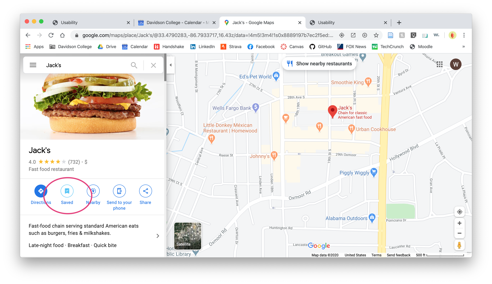

1. Find your current location.
As Sarah opened up Google Maps, the page automatically opened to a map of perhaps a 2 square-mile area
around our location at the time (seen in the header picture above). While I expected Sarah might type the address in the
search bar, she ended up navigating by dragging and zooming in using the trackpad. She was able to find our location visually in about 30 seconds, but it took her another
minute or so to actually pull up the Maps result for the address.
2. Pull up the photos for a restaurant you like.
Here, also, Sarah browsed around by dragging and zooming on the map, rather than searching for a place by name or address.
She found a local fast food restaurant called Jack's on the map and clicked on its Google-style fork-and-knife restaurant icon. That pulled up Google's standard restaurant sidebar.
To access the library of photos, she clicked on the featured image above the restaurant's name. With this step, she arrived on the page shown below with the photos accessible on Google Maps for this restaurant.
3. Save that restaurant to one of your Maps lists.
Sarah had not previously known about this feature on Google Maps, but she correctly navigated back to the overview restaurant page, which shows an icon
to save a location to a list on your account. The icon marked "Save", so it would a pretty straight-forward action for the average user. After Sarah clicked the icon,
the page gave her the visual confirmation that the restaurant had been saved.


4. Find directions to a place you go frequently.
For this task, Sarah chose to find directions to the stables where she rides horses. This was the first time she used the search bar -
she typed in the name of the country road that leads to the stables, and then found a marker on the map for the actual location. She was quick to find the "directions" icon
on the layout, and pulled up the map presentation of three route options, as seen here.
However, once she got to this point, she found herself a bit "stuck" - it wasn't apparent to her how to generate the step-by-step directions from this point.
After a minute, she did finally figure out that she had to select and click on one of the route options on the left side of the page. Perhaps an improvement to this page would be
some sort of indication like "choose a route:" or something similar, to guide the user through these steps for finding their directions.
5. Find the link to share these directions
Sarah very easily found the feature to share the link to these directions, once she pulled up the step-by-step page for that specific route.
She intuitively recognized Google's connected-nodes icon for sharing content, and clicked that to pull up a box with the link and more sharing options, as seen below.
Recap
Ultimately, Sarah was pretty successful in using Google Maps to accomplish the 5 tasks presented here. She predominantly used the methods
that she knew the best (navigating on the map by dragging and zooming), rather than the quickest methods (e.g. the search bar). However, she likely
would find her way to this faster method with more extensive and frequent use of the site. Google's well-designed and intuitive icons made it simple for her to
find the features that she needed to accomplish the given tasks - this is consistent with the majority of other Google products, which use the same design scheme.